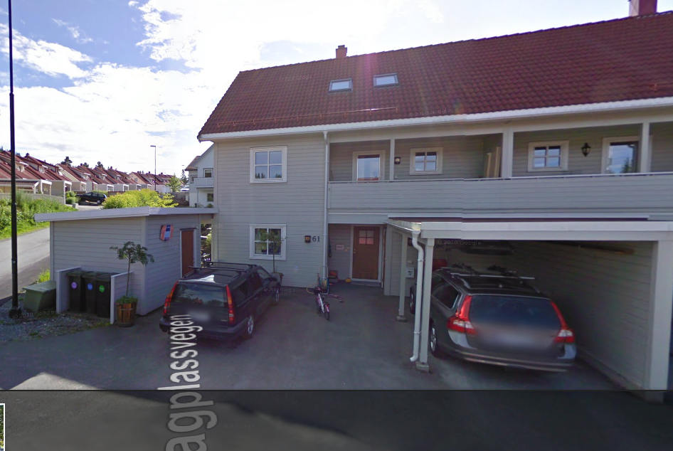
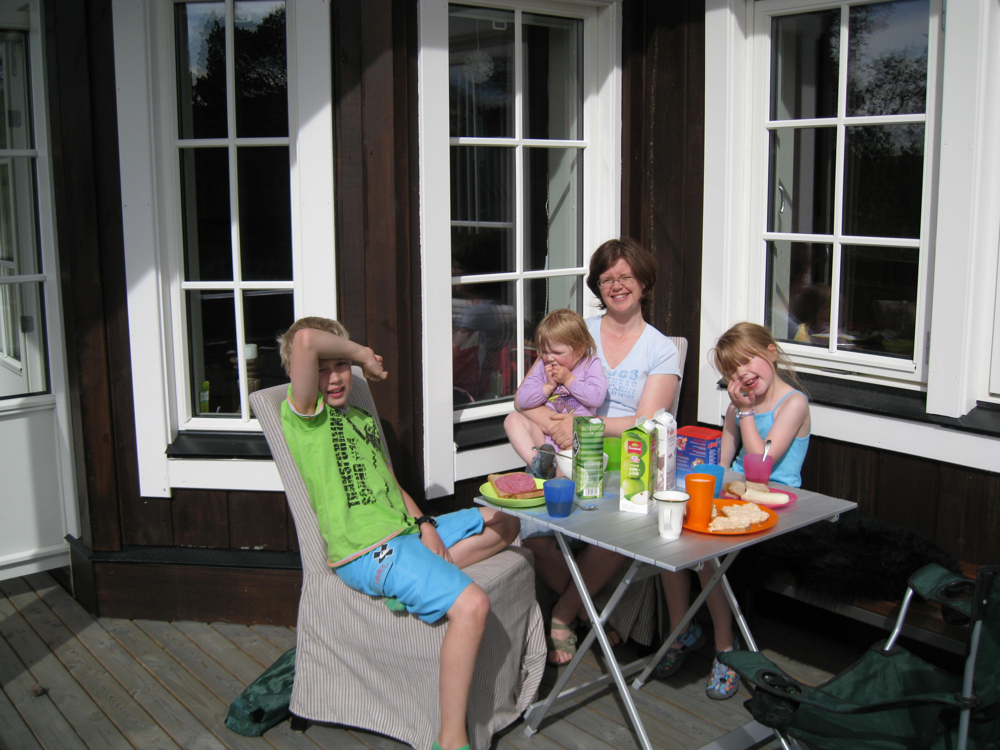
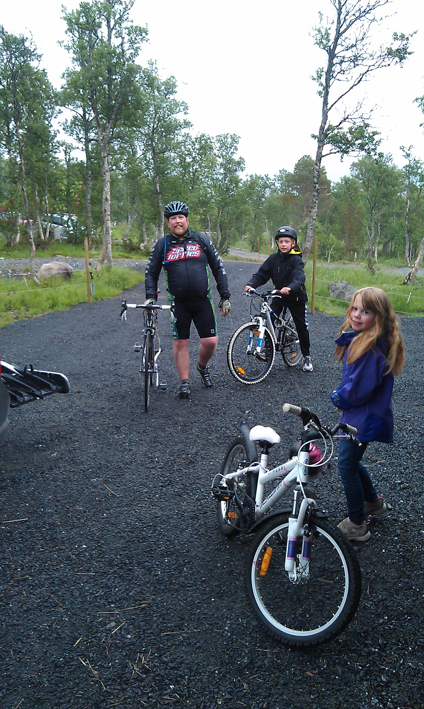
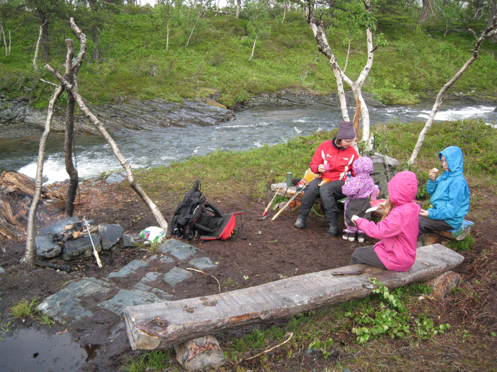
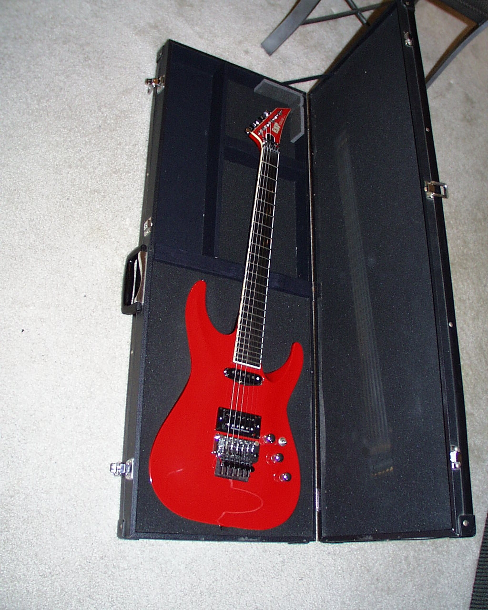
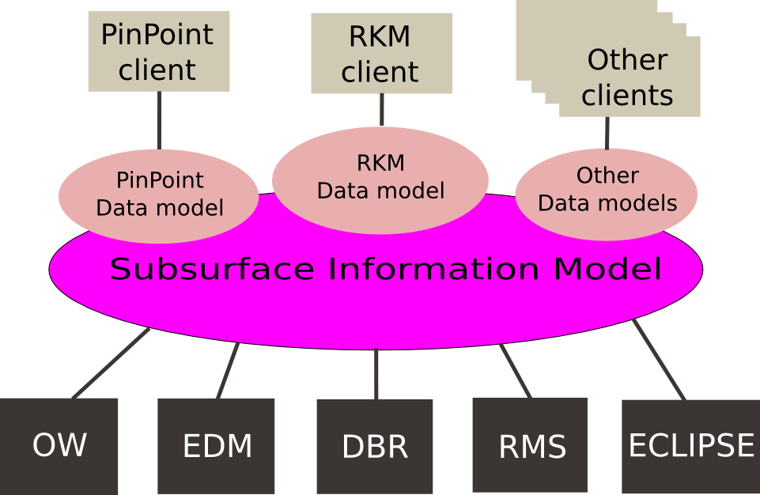

Jørn Ølmheim
Who am I?
Opphav
- Mor fra Ørlandet (Brekstad)
- Far fra Sogndal
- Født og oppvokst i Trondheim
Gift, tre barn

Bor på Vikåsen, Ranheim
Hytte på Nerskogen (ved Oppdal)
Liker å lese bøker

Sykling
Ski

Ut på tur


Gitar
Software Craftsman
- Sitter så ofte jeg kan med laptop'en
- Polygot programmerer
- Interessert i nye gadgets og ny hardware
- Foretrekker fri og åpen teknologi
- Opptatt av at alt skal ha et api, så jeg kan hacke det
Experience

NTNU Siv.ing. IT

Working in Statoil since 1998
- Trading systems (Client/server)
- Trading Position Management
- Framework development
- Integration and web service development
- TOPS: Architect and lead technical architect
- Software Agents

What am I working on?
PinPoint

Subsurface Integration Hub (SSIHub)
Seismic Data Processing Architecture (SDPA)
Collaboration with Fraunhofer to create a new platform for running HPC applications. Highlights include a shared global memory model for clusters, and faulttolerant job scheduler.
Reservoir Knowledge Manager (RKM)
Geo model centric project to capture lessons learned when working with reservoir models. Web application written in Python and Django.
Teradata
Storage solution for big data, used for storing raw seismic data. Includes cluster for transforming and creating models on the fly.
SDP Team
Maintaining software developent tools for the research community. Version control, bug tracing/project management, Wiki, Continuous Integration, IDE's and updated software libraries.